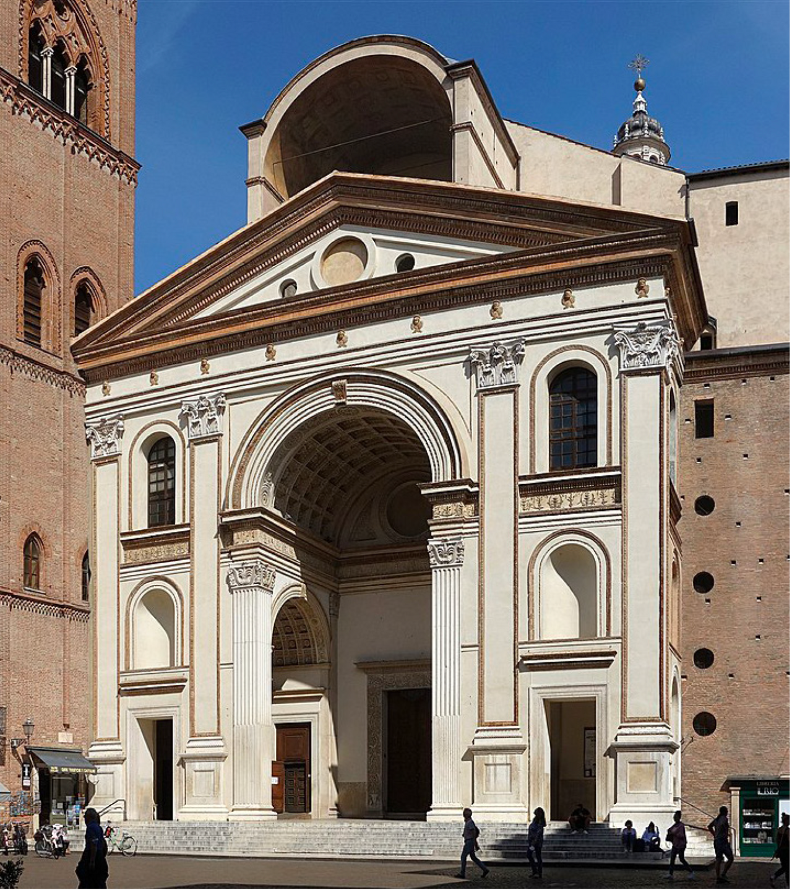
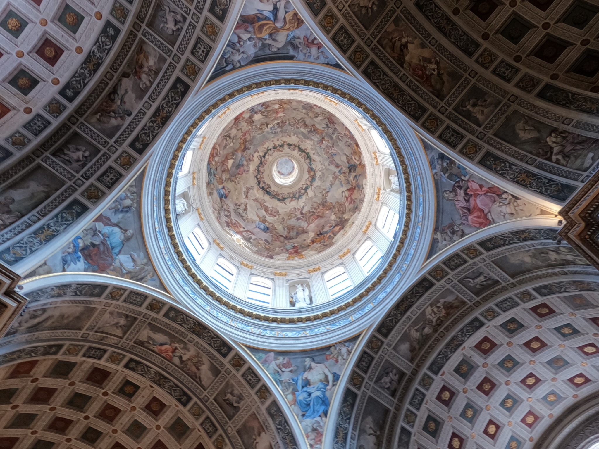
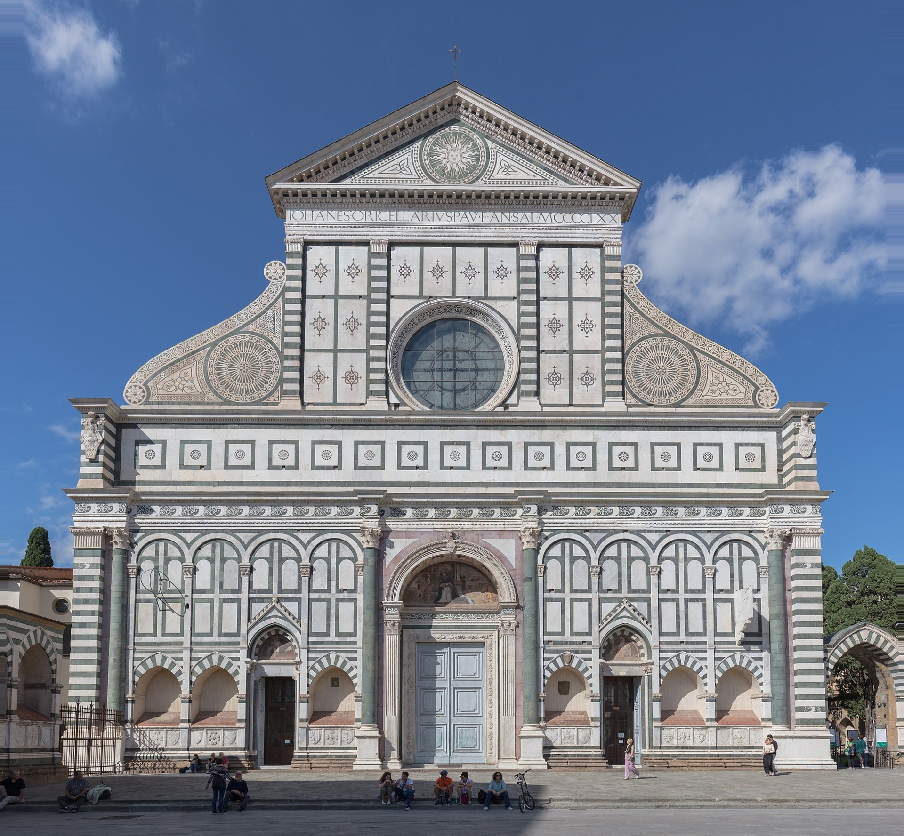
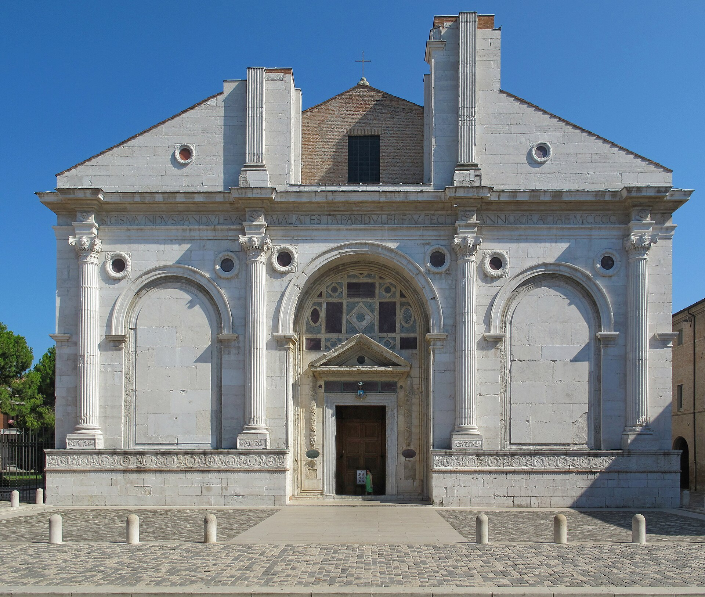
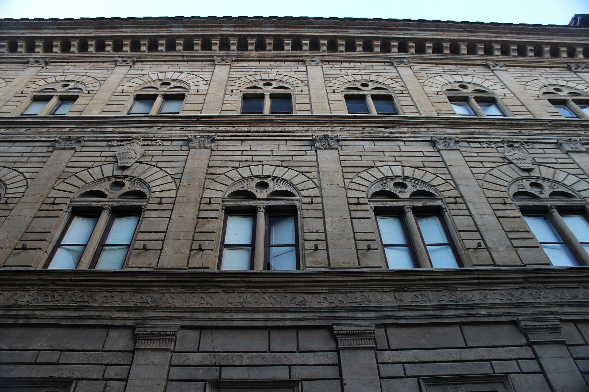
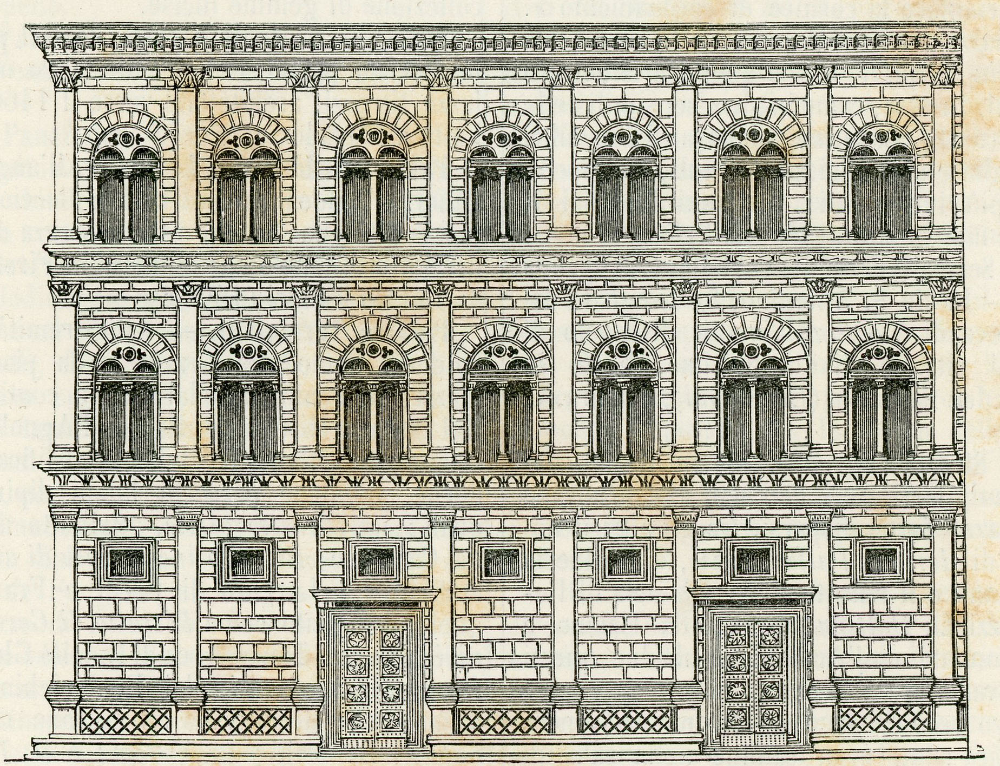
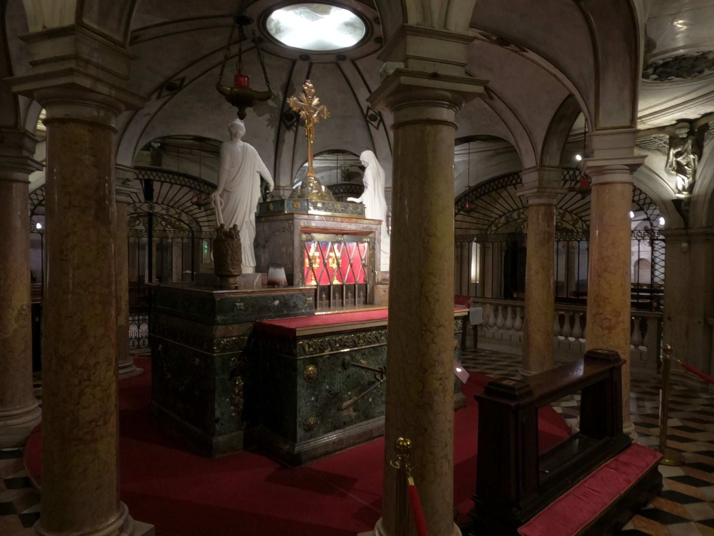

En quelques mots
Leon Battista Alberti (1404–1472) est un humaniste, écrivain et théoricien majeur de la Renaissance italienne. Il réfléchit aux proportions, à la beauté et à l’organisation des édifices. Son traité De re aedificatoria contribue à diffuser une nouvelle manière de concevoir l’architecture, inspirée de Rome antique.
Son idée essentielle : l’harmonie ne vient pas d’une accumulation de décors, mais des relations entre les parties d’un ensemble.
Sant’Andrea — Mantoue
Une façade qui emprunte au temple et à l’arc de triomphe. Le grand arc central attire le regard ; de part et d’autre, des masses plus étroites donnent à la composition son rythme.

Grand fronton triangulaireMasse latérale(petit)Masse latérale
(petit)Grande ouverture centrale
(grand)
Levez les yeux : les voûtes et la coupole

Les caissons géométriques des voûtes rappellent les grands édifices romains. Au centre de ta photographie, la coupole laisse entrer la lumière par les fenêtres de son tambour.
Attention à la chronologie
La coupole visible aujourd’hui a été conçue au XVIIIe siècle par Filippo Juvarra : elle ne doit pas être attribuée à Alberti. Elle montre comment le monument a évolué après lui.
Santa Maria Novella — Florence
Créer une harmonie nouvelle à partir d’une église déjà ancienne. Alberti compose la partie supérieure de la façade en dialogue avec les éléments médiévaux existants.

Fronton triangulaireVoluteVolutePartie médiévale conservéePourquoi est-ce la Renaissance ?
Parce que l’Antiquité n’est plus seulement un répertoire de motifs à copier. Elle devient une source de principes : proportion, ordre, symétrie, articulation des volumes. Brunelleschi explore ces principes dans la construction ; Alberti les formule aussi dans ses écrits.
Pour aller plus loin


Comparer le palais actuel avec une gravure ancienne

L’histoire du monument — Le Précieux Sang du Christ

Selon une tradition chrétienne, le soldat romain Longin, qui aurait percé le flanc du Christ lors de la Crucifixion, aurait recueilli de la terre imprégnée de son sang avant de l’apporter à Mantoue.
La relique, dont l’authenticité relève de la foi et de la tradition, devient au Moyen Âge un important objet de vénération et attire de nombreux pèlerins.
Au XVe siècle, les Gonzague décident de faire construire une basilique plus vaste et prestigieuse. Alberti conçoit alors une église capable d’accueillir les foules, avec une immense nef et de grandes chapelles latérales. La construction débute en 1472, l’année de sa mort.
Aujourd’hui encore, la relique est conservée dans la crypte de Sant’Andrea.
Crédits photographiques
Portrait de Leon Battista Alberti : gravure de G. Benaglia — domaine public — Wikimedia Commons.
Sant’Andrea (façade) : Velvet — CC BY-SA 4.0 — Wikimedia Commons. Annotations superposées sur la page, sans altération du fichier source. Lien exact du fichier Commons à compléter.
Santa Maria Novella : Diego Delso — delso.photo — CC BY-SA 4.0 — Wikimedia Commons. Lien exact du fichier Commons à compléter.
Tempio Malatestiano : Wikimedia Commons — CC BY-SA 3.0 (auteur et lien exact à vérifier). Palazzo Rucellai : Miguel Hermoso Cuesta — CC BY-SA 4.0 (lien exact à compléter). Gravure ancienne : graveur anonyme, domaine public.
Photographies de la coupole et de l'espace du Précieux Sang : photographies personnelles, reproduites avec l'autorisation du propriétaire.